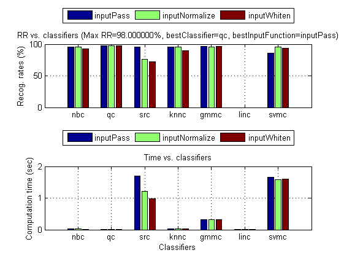
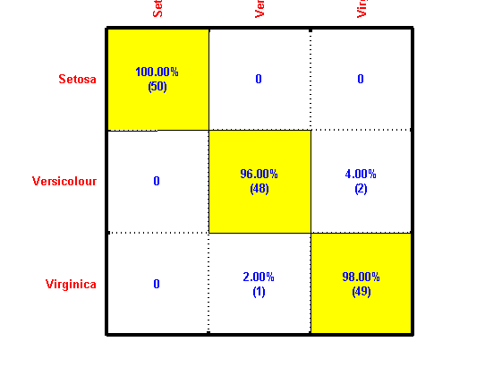

perfAll
Performance evaluation for various combinations of classifiers and input normalization schemes
Contents
Syntax
- perfData=perfAll(DS, opt)
- perfData=perfAll(DS, opt, plotOpt)
- [perfData, bestClassifierIndex]=perfAll(DS, opt, plotOpt)
- [perfData, bestClassifierIndex, bestClassifier, bestInputFunction]=perfAll(DS, opt, plotOpt)
Description
perfData=perfAll(DS, opt) tries out various classifiers combined with various schemes of input normalization to derive the leave-one-out accuracy.
Example
DS=prData('iris'); opt=perfAll('defaultOpt'); opt.nFold=10; [perfData, bestId]=perfAll(DS, opt, 1); structDispInHtml(perfData, 'Performance of various classifiers via cross validation'); % === Display the confusion matrix confMat=confMatGet(DS.output, perfData(bestId).bestComputedClass); opt=confMatPlot('defaultOpt'); opt.className=DS.outputName; figure; confMatPlot(confMat, opt);
.*.* optimization finished, #iter = 195 nu = 0.210529 obj = -28.421150, rho = 0.104733 nSV = 85, nBSV = 0 .* optimization finished, #iter = 173 nu = 0.220740 obj = -29.801751, rho = 0.158372 nSV = 86, nBSV = 0 .*.* optimization finished, #iter = 186 nu = 0.252783 obj = -34.125630, rho = 0.054855 nSV = 89, nBSV = 0 Total nSV = 130 Accuracy = 100% (135/135) (classification) Accuracy = 100% (15/15) (classification) .* optimization finished, #iter = 176 nu = 0.203811 obj = -27.513028, rho = 0.136057 nSV = 83, nBSV = 0 .*.* optimization finished, #iter = 185 nu = 0.209725 obj = -28.313061, rho = 0.169086 nSV = 83, nBSV = 0 .* optimization finished, #iter = 169 nu = 0.248663 obj = -33.569516, rho = 0.033840 nSV = 88, nBSV = 0 Total nSV = 127 Accuracy = 100% (135/135) (classification) Accuracy = 93.3333% (14/15) (classification) .* optimization finished, #iter = 177 nu = 0.198752 obj = -26.832029, rho = 0.131104 nSV = 83, nBSV = 0 .* optimization finished, #iter = 179 nu = 0.210107 obj = -28.364045, rho = 0.195683 nSV = 83, nBSV = 0 .* optimization finished, #iter = 179 nu = 0.248677 obj = -33.571178, rho = 0.066743 nSV = 88, nBSV = 0 Total nSV = 127 Accuracy = 100% (135/135) (classification) Accuracy = 66.6667% (10/15) (classification) .* optimization finished, #iter = 170 nu = 0.201081 obj = -27.147449, rho = 0.164605 nSV = 82, nBSV = 0 .* optimization finished, #iter = 170 nu = 0.206601 obj = -27.891346, rho = 0.196513 nSV = 82, nBSV = 0 .* optimization finished, #iter = 179 nu = 0.253388 obj = -34.207062, rho = 0.032959 nSV = 88, nBSV = 0 Total nSV = 126 Accuracy = 100% (135/135) (classification) Accuracy = 80% (12/15) (classification) .* optimization finished, #iter = 175 nu = 0.194352 obj = -26.237211, rho = 0.151154 nSV = 81, nBSV = 0 .* optimization finished, #iter = 163 nu = 0.206621 obj = -27.894439, rho = 0.223855 nSV = 81, nBSV = 0 .* optimization finished, #iter = 178 nu = 0.247665 obj = -33.435047, rho = 0.075841 nSV = 88, nBSV = 0 Total nSV = 125 Accuracy = 100% (135/135) (classification) Accuracy = 73.3333% (11/15) (classification) .* optimization finished, #iter = 177 nu = 0.208499 obj = -28.148344, rho = 0.114978 nSV = 82, nBSV = 0 .* optimization finished, #iter = 162 nu = 0.220365 obj = -29.747717, rho = 0.178332 nSV = 82, nBSV = 0 .*.* optimization finished, #iter = 180 nu = 0.255811 obj = -34.536037, rho = 0.065697 nSV = 88, nBSV = 0 Total nSV = 126 Accuracy = 100% (135/135) (classification) Accuracy = 93.3333% (14/15) (classification) .* optimization finished, #iter = 168 nu = 0.202678 obj = -27.362677, rho = 0.151092 nSV = 82, nBSV = 0 .* optimization finished, #iter = 166 nu = 0.209061 obj = -28.223057, rho = 0.187296 nSV = 82, nBSV = 0 .* optimization finished, #iter = 173 nu = 0.250981 obj = -33.881799, rho = 0.037004 nSV = 88, nBSV = 0 Total nSV = 126 Accuracy = 100% (135/135) (classification) Accuracy = 80% (12/15) (classification) .* optimization finished, #iter = 176 nu = 0.204807 obj = -27.648890, rho = 0.140856 nSV = 82, nBSV = 0 .* optimization finished, #iter = 166 nu = 0.214889 obj = -29.009541, rho = 0.197007 nSV = 82, nBSV = 0 .*.* optimization finished, #iter = 181 nu = 0.255153 obj = -34.446601, rho = 0.058404 nSV = 88, nBSV = 0 Total nSV = 126 Accuracy = 100% (135/135) (classification) Accuracy = 93.3333% (14/15) (classification) .* optimization finished, #iter = 160 nu = 0.200728 obj = -27.099485, rho = 0.185574 nSV = 83, nBSV = 0 .* optimization finished, #iter = 176 nu = 0.207829 obj = -28.056790, rho = 0.227451 nSV = 85, nBSV = 0 .* optimization finished, #iter = 175 nu = 0.262082 obj = -35.380814, rho = 0.043861 nSV = 89, nBSV = 0 Total nSV = 129 Accuracy = 100% (135/135) (classification) Accuracy = 86.6667% (13/15) (classification) .*.* optimization finished, #iter = 185 nu = 0.213264 obj = -28.790115, rho = 0.129749 nSV = 85, nBSV = 0 .*.* optimization finished, #iter = 181 nu = 0.220298 obj = -29.740330, rho = 0.167021 nSV = 84, nBSV = 0 .* optimization finished, #iter = 172 nu = 0.258764 obj = -34.931942, rho = 0.037935 nSV = 89, nBSV = 0 Total nSV = 129 Accuracy = 100% (135/135) (classification) Accuracy = 93.3333% (14/15) (classification) * optimization finished, #iter = 31 nu = 0.027577 obj = -3.723153, rho = -0.118449 nSV = 8, nBSV = 0 * optimization finished, #iter = 32 nu = 0.022224 obj = -3.000390, rho = 0.121603 nSV = 11, nBSV = 0 * optimization finished, #iter = 63 nu = 0.245984 obj = -47.671039, rho = -0.055771 nSV = 26, nBSV = 18 Total nSV = 37 Accuracy = 97.7778% (132/135) (classification) Accuracy = 100% (15/15) (classification) * optimization finished, #iter = 23 nu = 0.027741 obj = -3.744993, rho = -0.100775 nSV = 7, nBSV = 0 * optimization finished, #iter = 31 nu = 0.020628 obj = -2.784919, rho = 0.077186 nSV = 12, nBSV = 0 *.* optimization finished, #iter = 98 nu = 0.229200 obj = -46.810231, rho = -0.107308 nSV = 26, nBSV = 18 Total nSV = 39 Accuracy = 97.037% (131/135) (classification) Accuracy = 93.3333% (14/15) (classification) * optimization finished, #iter = 26 nu = 0.027606 obj = -3.727055, rho = -0.120927 nSV = 8, nBSV = 0 * optimization finished, #iter = 31 nu = 0.022223 obj = -3.000205, rho = 0.122061 nSV = 11, nBSV = 0 * optimization finished, #iter = 61 nu = 0.247182 obj = -48.684125, rho = 0.031632 nSV = 27, nBSV = 19 Total nSV = 39 Accuracy = 97.037% (131/135) (classification) Accuracy = 100% (15/15) (classification) * optimization finished, #iter = 31 nu = 0.027174 obj = -3.668923, rho = -0.061754 nSV = 8, nBSV = 0 * optimization finished, #iter = 39 nu = 0.020612 obj = -2.782579, rho = 0.114259 nSV = 12, nBSV = 0 * optimization finished, #iter = 43 nu = 0.230491 obj = -45.071900, rho = -0.049220 nSV = 25, nBSV = 18 Total nSV = 38 Accuracy = 97.7778% (132/135) (classification) Accuracy = 93.3333% (14/15) (classification) * optimization finished, #iter = 47 nu = 0.027408 obj = -3.699679, rho = -0.098005 nSV = 11, nBSV = 0 * optimization finished, #iter = 26 nu = 0.022135 obj = -2.988377, rho = 0.123595 nSV = 10, nBSV = 0 * optimization finished, #iter = 53 nu = 0.227854 obj = -43.196825, rho = 0.052059 nSV = 23, nBSV = 17 Total nSV = 35 Accuracy = 97.7778% (132/135) (classification) Accuracy = 93.3333% (14/15) (classification) * optimization finished, #iter = 36 nu = 0.027894 obj = -3.765570, rho = -0.103465 nSV = 9, nBSV = 0 * optimization finished, #iter = 32 nu = 0.022224 obj = -3.000390, rho = 0.121603 nSV = 11, nBSV = 0 * optimization finished, #iter = 69 nu = 0.214130 obj = -41.400035, rho = -0.097727 nSV = 26, nBSV = 17 Total nSV = 38 Accuracy = 97.7778% (132/135) (classification) Accuracy = 93.3333% (14/15) (classification) * optimization finished, #iter = 38 nu = 0.027893 obj = -3.765573, rho = -0.103390 nSV = 9, nBSV = 0 * optimization finished, #iter = 34 nu = 0.022046 obj = -2.976200, rho = 0.111884 nSV = 11, nBSV = 0 * optimization finished, #iter = 47 nu = 0.213400 obj = -39.058475, rho = -0.152165 nSV = 23, nBSV = 14 Total nSV = 35 Accuracy = 98.5185% (133/135) (classification) Accuracy = 86.6667% (13/15) (classification) * optimization finished, #iter = 46 nu = 0.027083 obj = -3.655798, rho = -0.116763 nSV = 9, nBSV = 0 * optimization finished, #iter = 26 nu = 0.022226 obj = -3.000390, rho = 0.121736 nSV = 11, nBSV = 0 * optimization finished, #iter = 72 nu = 0.233241 obj = -47.016786, rho = -0.032561 nSV = 27, nBSV = 18 Total nSV = 38 Accuracy = 97.7778% (132/135) (classification) Accuracy = 100% (15/15) (classification) * optimization finished, #iter = 45 nu = 0.020849 obj = -2.814084, rho = 0.032947 nSV = 11, nBSV = 0 * optimization finished, #iter = 58 nu = 0.019434 obj = -2.624090, rho = 0.212667 nSV = 11, nBSV = 0 * optimization finished, #iter = 63 nu = 0.250707 obj = -49.266167, rho = -0.058143 nSV = 27, nBSV = 20 Total nSV = 40 Accuracy = 97.037% (131/135) (classification) Accuracy = 100% (15/15) (classification) * optimization finished, #iter = 20 nu = 0.027801 obj = -3.752276, rho = -0.098795 nSV = 8, nBSV = 0 * optimization finished, #iter = 45 nu = 0.022129 obj = -2.987635, rho = 0.117384 nSV = 12, nBSV = 0 * optimization finished, #iter = 83 nu = 0.243249 obj = -48.296774, rho = -0.101455 nSV = 27, nBSV = 17 Total nSV = 38 Accuracy = 97.037% (131/135) (classification) Accuracy = 100% (15/15) (classification) *.* optimization finished, #iter = 112 nu = 0.063243 obj = -8.537888, rho = -0.039631 nSV = 24, nBSV = 0 *.* optimization finished, #iter = 122 nu = 0.048120 obj = -6.496512, rho = 0.309793 nSV = 29, nBSV = 0 *.* optimization finished, #iter = 117 nu = 0.304132 obj = -54.080445, rho = 0.416105 nSV = 38, nBSV = 18 Total nSV = 59 Accuracy = 98.5185% (133/135) (classification) Accuracy = 100% (15/15) (classification) *.* optimization finished, #iter = 124 nu = 0.062218 obj = -8.399704, rho = -0.016631 nSV = 26, nBSV = 0 *.* optimization finished, #iter = 93 nu = 0.046235 obj = -6.242330, rho = 0.263566 nSV = 29, nBSV = 0 .*.* optimization finished, #iter = 181 nu = 0.286132 obj = -50.723264, rho = 0.279000 nSV = 40, nBSV = 15 Total nSV = 65 Accuracy = 98.5185% (133/135) (classification) Accuracy = 93.3333% (14/15) (classification) *.* optimization finished, #iter = 113 nu = 0.062070 obj = -8.379474, rho = -0.055820 nSV = 25, nBSV = 0 * optimization finished, #iter = 74 nu = 0.047000 obj = -6.345371, rho = 0.291023 nSV = 27, nBSV = 0 *.* optimization finished, #iter = 107 nu = 0.298077 obj = -52.384297, rho = 0.492517 nSV = 40, nBSV = 18 Total nSV = 65 Accuracy = 100% (135/135) (classification) Accuracy = 100% (15/15) (classification) *.* optimization finished, #iter = 115 nu = 0.062479 obj = -8.434924, rho = -0.011258 nSV = 25, nBSV = 0 *.* optimization finished, #iter = 106 nu = 0.045936 obj = -6.201586, rho = 0.297020 nSV = 26, nBSV = 0 *.* optimization finished, #iter = 110 nu = 0.285194 obj = -49.477908, rho = 0.429260 nSV = 37, nBSV = 16 Total nSV = 62 Accuracy = 99.2593% (134/135) (classification) Accuracy = 93.3333% (14/15) (classification) *.* optimization finished, #iter = 110 nu = 0.061049 obj = -8.240732, rho = 0.026378 nSV = 24, nBSV = 0 *.* optimization finished, #iter = 111 nu = 0.045762 obj = -6.178227, rho = 0.325594 nSV = 29, nBSV = 0 *.* optimization finished, #iter = 127 nu = 0.276761 obj = -46.653162, rho = 0.345736 nSV = 39, nBSV = 17 Total nSV = 63 Accuracy = 100% (135/135) (classification) Accuracy = 86.6667% (13/15) (classification) *.* optimization finished, #iter = 101 nu = 0.063392 obj = -8.558269, rho = -0.015311 nSV = 25, nBSV = 0 *.* optimization finished, #iter = 93 nu = 0.048048 obj = -6.486602, rho = 0.312126 nSV = 27, nBSV = 0 *.* optimization finished, #iter = 118 nu = 0.289414 obj = -50.828234, rho = 0.413405 nSV = 42, nBSV = 18 Total nSV = 63 Accuracy = 99.2593% (134/135) (classification) Accuracy = 100% (15/15) (classification) *.* optimization finished, #iter = 90 nu = 0.063091 obj = -8.518413, rho = -0.034201 nSV = 23, nBSV = 0 *.* optimization finished, #iter = 114 nu = 0.045562 obj = -6.150398, rho = 0.274832 nSV = 27, nBSV = 0 .*.* optimization finished, #iter = 200 nu = 0.271854 obj = -45.469327, rho = 0.312646 nSV = 43, nBSV = 16 Total nSV = 61 Accuracy = 100% (135/135) (classification) Accuracy = 80% (12/15) (classification) *.* optimization finished, #iter = 103 nu = 0.062627 obj = -8.454928, rho = -0.037866 nSV = 24, nBSV = 0 *.* optimization finished, #iter = 98 nu = 0.047442 obj = -6.404862, rho = 0.293317 nSV = 29, nBSV = 0 *.* optimization finished, #iter = 122 nu = 0.293621 obj = -52.198306, rho = 0.377759 nSV = 40, nBSV = 18 Total nSV = 63 Accuracy = 99.2593% (134/135) (classification) Accuracy = 100% (15/15) (classification) *.* optimization finished, #iter = 110 nu = 0.053399 obj = -7.208994, rho = 0.116634 nSV = 22, nBSV = 0 * optimization finished, #iter = 66 nu = 0.041038 obj = -5.540127, rho = 0.405108 nSV = 25, nBSV = 0 *.* optimization finished, #iter = 137 nu = 0.309958 obj = -54.478137, rho = 0.415742 nSV = 43, nBSV = 19 Total nSV = 64 Accuracy = 99.2593% (134/135) (classification) Accuracy = 93.3333% (14/15) (classification) *.* optimization finished, #iter = 108 nu = 0.059082 obj = -7.976168, rho = 0.003384 nSV = 25, nBSV = 0 *.* optimization finished, #iter = 108 nu = 0.047790 obj = -6.452094, rho = 0.306230 nSV = 28, nBSV = 0 *.* optimization finished, #iter = 117 nu = 0.296389 obj = -51.279489, rho = 0.455170 nSV = 42, nBSV = 17 Total nSV = 63 Accuracy = 99.2593% (134/135) (classification) Accuracy = 93.3333% (14/15) (classification) 